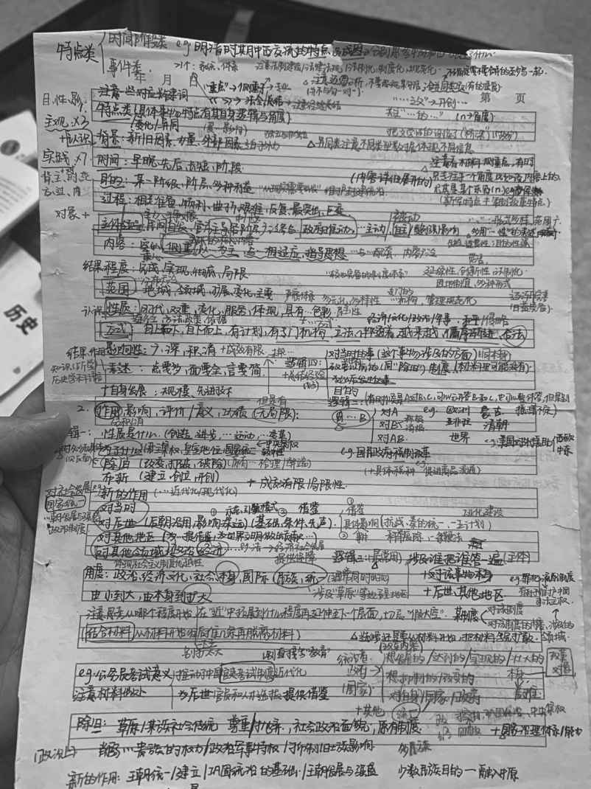

三、参考答案学习法：在考试中得高分的保障
在上一部分，我们讲的“出题人思维”，是为了保证我们能在考试时，与出题人之间形成良好的沟通，了解出题人的意图，进而知道如何做出这道题。
当你知道如何解这道题后，你需要把这道题的具体答案写出来，像填空题、选择题等客观题没有太多技巧，你直接选出正确的答案即可。但如果是主观题，就没有绝对的标准答案，你需要根据自己的理解，在答卷上写下你的答案，评卷人会根据你写的答案，裁定给你多少分。这个过程，是你与评卷人的沟通过程。
那如何与评卷人做好沟通，让你写的答案更符合评卷人的口味，让其为你打出高分呢？我推荐大家使用“参考答案学习法”，这是一种简单而且效率极高的学习方法。
1.为什么参考答案那么重要
一场考试，你的真实水平并不直接对应你最终的考试分数。真正决定你考试分数的，是你写在试卷上的答案。因为你最终的分数是由评卷人根据你写在考卷上的答案给出的分数决定的。所以，就算你平时学得再好，准备得再充分，如果你写在考卷上的答案不符合评卷老师的口味，那就得不到高分；反之，即使你平时学得没有那么好，但是你非常清楚评卷老师的喜好，你写的答案尽可能做到符合评卷老师的评分标准，你也能拿下高分。
既然最终的分数是由写下的答案说了算，那怎样才能让自己的答案更符合评卷老师的口味呢？
最好的学习工具就是“标准答案”了。为什么呢？因为标准答案是最符合评卷老师喜好的答案。
所以，如果想要在考试中得高分，你就需要通过练习，让自己的答案写得最接近标准答案。
你可能会好奇，到底该去哪里找标准答案呢？有这样两个最接近标准答案的参考答案。
第一，以往真题的标准答案。
如果你参加的是某些大型考试，比如每年一次的那种考试，这类考试已经举办过很多次了，以往每次考试真题的标准答案，就是你绝佳的学习资料。
比如高考，教育部考试中心每年都会公布标准答案。而且，市面上还有很多专门解析高考试题的书，里面不仅有标准答案，还有具体的试题分析、解题过程、对答案的具体分析，这些都是非常好的学习资料。
第二，高质量辅导资料和模拟题的参考答案。
除了以往真题的标准答案外，针对考试的辅导资料和模拟题的参考答案，也是非常不错的选择。虽然这些题目不是真题，但是很多高质量的辅导资料，其参考答案写得也非常好，和最终的标准答案已经非常接近了。所以，这也是非常好的参考答案学习资料。
2.学习参考答案的三个关键和四个步骤
知道了参考答案如此重要，那具体该如何进行参考答案的学习法呢？需要把握三个关键和四个步骤。
（1）三个关键：答案结构、得分点、学科术语
首先，核心学习这“三个关键”：答案结构、得分点、学科术语。
答案结构：就是答案的骨架，是把整个答案串联起来的结构，这是首先需要学习的。学会了“答案结构”，当你自己作答时，你就知道该如何组织自己的答案，这样你写出来的就是逻辑清晰、体系严密的，这样的答案一定可以拿高分。而且，当你严格按照标准答案的答案结构来写的时候，你也就避免了在考试时“想到哪里写到哪里”的无头绪状况。
得分点：考试基本都是踩点给分，而其中的点对应的就是“得分关键词”、关键步骤。也就是说，你的答案中，出现这些得分关键词、这些关键步骤，你就能得分；如果没有，即使你的答案写得再好，也不能得分。所以，哪些是得分点，自然也是学习的关键之处了。你可能会说，我怎么知道哪些是关键得分点。不用着急，很多参考答案中，会对得分点进行清晰的标注。
学科术语：你有没有感觉到，有些人写的答案看上去显得很专业，“意思还是那个意思，怎么他说出来就更像那么回事？”反之，你写的答案给人感觉很不专业，显得很业余。
为什么会这样呢？这是因为高质量的答案往往会带有很多“学科术语”。比如经济类的答题，当你的答案中出现“边际效应”“机会成本”等学科术语时，就显得很专业；再比如数学类的答题，当你的答案中出现关键公式、关键定理等学科术语时，就显得很科学、有逻辑。
所以，学科术语也是参考答案的学习关键，简单来说，你的答案要符合这个科目的特质，能让人产生你“很懂”的感觉。
那怎么学习这类学科术语呢？一方面，你可以专门找时间集中看某一科的参考答案，把“学科术语”集中挑出来，认真研究、理解并记忆，这样你的脑海中就一下子汇集了很多学科术语。另一方面，“学科术语”也是一个积累的过程，你可以拿一个小本子，专门用来积累学科术语，在平时考试或者做题时，也刻意去使用它们。这样日积月累，你的答案就会看上去越来越专业，越来越接近标准答案。
（2）四个步骤：答、看、修、答
知道了学习参考答案的三个关键后，接下来你就可以按照下面这“四个步骤”，更细致地模仿。
先自己答：先自己把答案写出来。
第一步，拿到题目，不要直接看参考答案，而是根据自己的理解直接作答。这一步是把自己目前的水平直接展示出来。
再对比看：再对比与标准答案的差别。
接着，你拿参考答案对比着看自己的答案写得如何，哪些地方和标准答案不一样。尤其要注意对比上一部分明确的“三个关键”。这一步的目的，是找出自己的问题。
对比修正：根据标准答案，修改自己的答案。
自己的问题找出来后，接着你就对着标准答案，逐项认真修正，直到改到一致为止。改完后，你要认真看标准答案和自己写的答案，确保自己下次做同类型的题目时能写下与标准答案一致的答案。
再自己答：再自己作答，直到与标准答案一致。
经历完以上三步，你最终写出了接近标准答案的答案，但这并不代表你就能得高分了，因为你是照着标准答案来写的，相当于是在“抄袭”。在考试时，如果不参考标准答案，你只靠自己不一定能写出来。
所以，接下来，你就应该收起标准答案，再对这道题进行作答，相当于自己再做一遍。写完答案，看自己是否已经做到了和标准答案一致。如果还不能，那就把这四个步骤重做一遍；如果能，那就代表你掌握了。
当然，我比较建议在你做完前三步后，间隔一两天后再进行这一步。因为人都容易遗忘，隔一两天后，如果你还能答出来，说明你真的已经理解了。如果马上就重复答一遍，可能有些地方没有真的理解，只是凭借当时的即时记忆，你写出来了，并不能说明你真的理解了。
在这四个步骤中，请一定要注意学习参考答案的三个关键点，因为这是得分的关键。
3.总结答题模板，把高分拿稳
我们学习参考答案，最终的目的是希望在正式的考试中拿到高分。
对于理科的科目，基本上你做对了就能拿到高分；对于文科的科目，很多人会觉得得分很“玄学”，也就是说，最终的分数并不可控。具体能得多少分，大家会觉得要看当时的发挥，甚至要看自己当时的考试状态。
那如何把大家眼中不确定的答案变成确定的高分呢？这就需要我们进行“答题模板总结”。
我在这本书中很多次说过类似的观点，越是大型的考试，要求越规范。因此，我们在学习参考答案的过程中，就需要进行答题模板的总结。
在学习参考答案时，我们要对经常出现的题型，进行答题模板的总结。这样你在真正的考试中，就可以按照这个模板直接进行答题，替换掉得分关键词即可。
下面是在语文考试中，经常会出现的诗歌鉴赏的主观题的例子。
举例：这首诗歌，表达了作者怎样的思想情感（5分）
满分答案模板：
√作者通过对×××的描写（1分，引述诗歌中的内容）
√表达了×××的思想（2分，写出具体表达了什么思想）
√抒发了×××的情感（2分，写出抒发了具体的什么情感）
这道题在中考、高考中非常常见，虽然诗歌换了，但是题目的问法没有变。既然问法没有变，那么就有相对固定的答题模板了。
假设这道题的分值是5分，这道题的固定答题模板就是配图中给大家列出的三个部分，而且都对应具体的分值。
在作答时，如果你想又快又稳地拿下高分或者满分，最好是按照这样的结构来写。
第一部分：先引述诗歌中的具体内容。
第二部分：写出表达了什么思想。
第三部分：写出抒发了什么样的情感。
有了这个结构，你就像做填空题一样，在第一部分，把诗歌中有用的具体内容填进去；第二和第三部分，把什么思想、什么情感中的“什么”分别换成具体的关键词，这些关键词就是得分点。
大家可能会问，什么思想和什么情感，这是一个很主观也是一个很宽泛的概念，即使是同样的情感，也可以用不同的词语表达出来。比如表达了“悲伤”的情感，那也极有可能写成“哀伤、忧伤、伤感、不开心”等词语，这样会不会就不能得分了呢？
这个问题你不用担心。这个问题我与参加过多次高考阅卷的老师沟通过，具体的改卷过程是这样的。就是阅卷老师在正式阅卷前，会拿到一份标准答案，关于这种主观题会有明确的说明。
比如标准答案是表达了“悲伤”的情感，可以直接得2分，但如果写的是其他同义词，比如哀伤、忧伤、伤感，同样也可以得2分，这个答案是有明确的限定范围的。如果你的答案写出了类似的意思，但表述不够精准，比如写成了“不开心”，可能就只能得1分了。当然，如果你的答案没有写出悲伤的意思，而是写成了“悲观”“悲喜”甚至是“开心”这种完全没有“悲伤”感觉的词语，那就不能得分。
另外，每个阅卷老师基本只能看同一道题，所以当这位老师看的全是这道题时，他的判断也基本可以做到精准。更何况，每一份答案都会由两个老师进行阅卷，如果分值在一定的分差内，就直接取平均分；如果差值超过标准，就引入第三人判卷；如果差值还是过大，就会提交给阅卷组进行集体评定。所以，有这样严格的阅卷流程，大家也就不用担心写了正确答案或者与正确答案意思接近的词得不了分。
可能还会有人问，该怎么保证自己能写对关键词或者与关键词意思相近的词呢？毕竟，主观题都很宽泛，没有明确的答案，大家都说“语文考的就是星辰大海”。
其实，只要你稍微仔细分析一下，就会发现现实情况并非如此。比如，还是以这道诗歌鉴赏题为例。虽然这道题问的是抒发了什么样的情感这样的问题，看似没有确切的答案，但可以确定的是，人的常见情感比如“喜、怒、忧、思、悲、恐、惊”是确定的。所以，当你写答案时，你只需要在这七种情感中做选择即可。当你根据诗歌的内容，从这七种情感中挑出一种，是很容易的。就算你有两种情感无法确定，你也可以把这两种都写进去，也能得分。
越是大型的考试，规则就越规范，你就越容易按照答题模板来作答。只要你针对题型去总结，就会发现，答案是有一定的确定性的，并不是那么宽泛。
我和一个北大女生有过这样一段对话：
我：你高考之前在想什么？
她：我就想着赶紧考吧，那些题目都会了。天天复习，也没啥可以复习了，就想赶紧考完就解放了。
我：那你在高考考场上是什么感觉呢？
她：我就感觉每道题我好像都做过，也没遇到什么特别的题目，就一道题一道题地做完了。
这个女生来自一所非常厉害的中学，他们学校是统一教研，老师们总结出每道题的答题模板或者答题要点，学生们会根据这些模板进行专门训练。这个过程就是我上面说的总结答题模板。
我给大家分享一个真实的例子，大家也能更清楚地知道考上清华北大的学生是怎么确保自己能拿到高分，而不是靠考场上的临时发挥的。
下面这一页笔记（@北大付小梦笔记），是一个考上北大的女生总结的。这页笔记，在他们学校被广泛传阅，让很多同学在高考时都多得了十几分。
这是一位来自河南的女生，她当年以全市第一名的成绩考上了北京大学，而且据说她也是他们县有史以来第一个考上北大的文科生。
这页笔记是她总结的高考文综历史大题中“历史事件反映了什么特点”的题目的答题方式。
这个问法的题目，在高考文综大题中是经常会出现的。她总结了这类题目可能的答题角度，也就是答题模板。这些答题角度，是她把近十年多个省市区的高考真题和高质量的模拟考题收集过来，将其中这一类型的题目和参考答案找出来，再总结后得出的。

@北大付小梦笔记
在考试中，遇到“考特点类”的题目，直接按照这个模板，从中选择符合这道题的角度进行作答即可。只要你照此操作下去，就能拿到高分。
所以，说到这里，你应该明白了学霸为什么是学霸，他们到底强在哪里。
在学霸眼中，文科大题并不是玄学，能得到多少分，都是可以确定的。因为，他们已经总结出了答题模板，确保自己一定能得多少分。
希望学霸这样的学习和总结精神，对你的学习有一些心灵上的触动和思维上的启发。